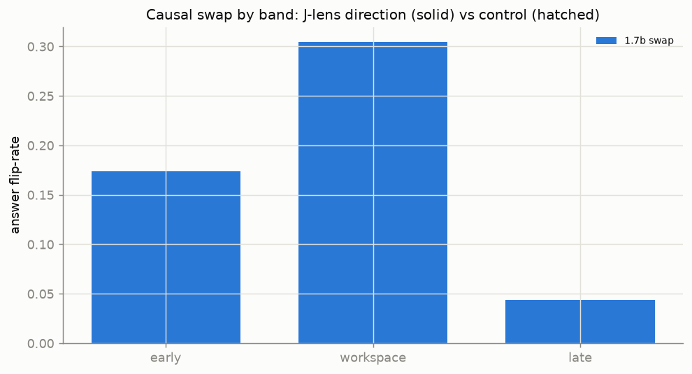
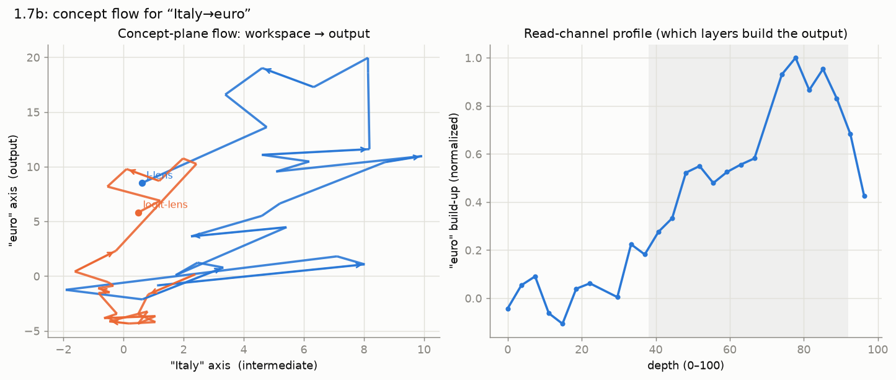

Results — causal importance
Is the J-space merely readable, or does it actually steer the computation?
Using the paper's shipped two-hop probe-swap set, we move the residual
component along a bridge entity's J-lens direction onto a different entity's
direction, across a layer band, and check whether the model's greedy answer
flips accordingly — against a matched-norm random control.

The workspace band is causally potent (1.7B)
| band | swap flip-rate | control flip-rate |
|---|---|---|
| early | 0.17 | 0.00 |
| workspace | 0.30 | 0.00 |
| late | 0.04 | 0.00 |
Two things stand out even at the smallest scale:
- The workspace band dominates. Intervening in the mid-layers flips the answer roughly twice as often as the early band and ~7× the late band — exactly where the paper locates the workspace.
- The control does nothing. A random direction of identical norm never produces the swapped answer, so the effect is specific to the J-lens directions, not to perturbation magnitude.
This is the striking part of the 1.7B result: the causal structure is present before the readout advantage (see scale) — the workspace is steering the two-hop before the J-lens clearly out-reads the logit-lens.
In progress
8B and 32B swap results overlay onto the figure as they complete; the scale question here is whether the workspace flip-rate grows (and the early/late bands fall further) with size.
Channels: workspace → output
A complementary view of how a concept reaches the output. For a two-hop probe we project the residual — transported into the final basis by the J-lens — onto a 2D plane spanned by two concept tokens (the intermediate and the answer), and trace the path layer by layer.

- Right — read-channel profile. The build-up of the answer concept along depth: it climbs steeply through the workspace band and peaks late — this is literally which layers assemble the output.
- Left — concept-plane flow. The J-lens path (blue) travels far across the concept plane, while the logit-lens path (orange) stays cramped near the origin — a visual of why the untransported logit lens under-reads the middle of the network (see Method).
Metaphor, and a small model
Attention mixes positions, so this is a projected trajectory, not an autonomous vector field — "streamline" is a visual metaphor for the path. At 1.7B the J-lens path is jagged (an immature workspace); the 8B/32B versions should be smoother and move more cleanly from the intermediate axis to the output axis.